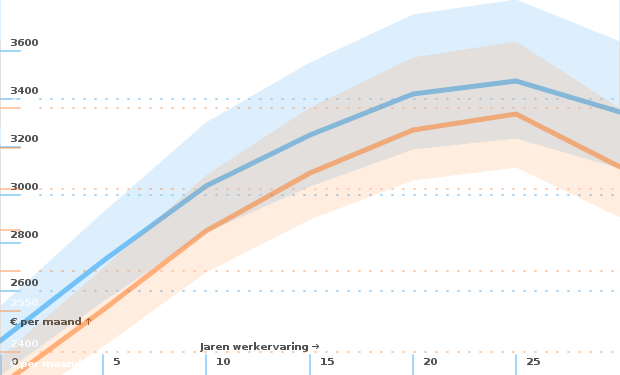
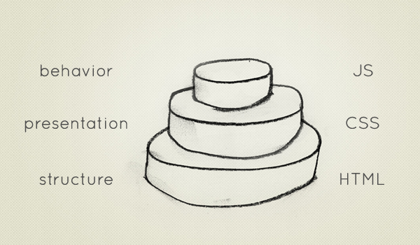
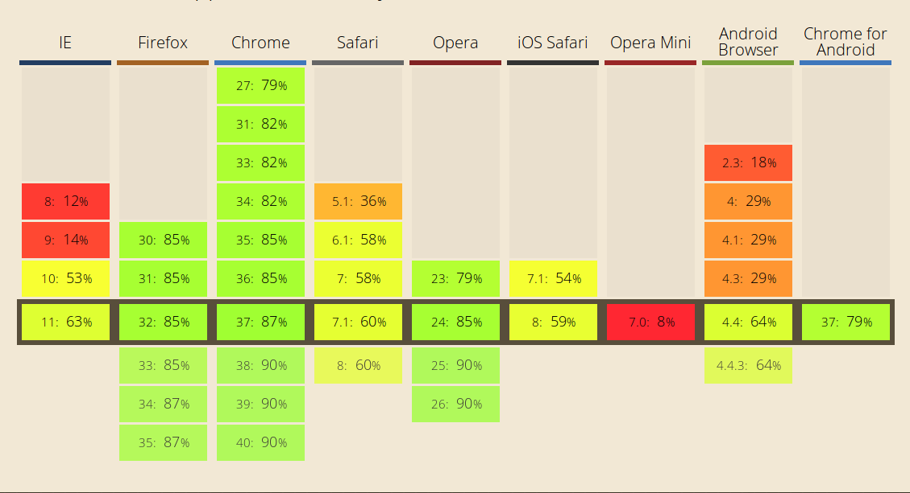
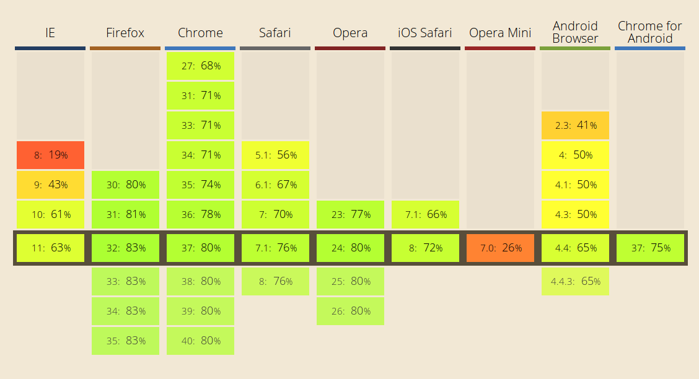
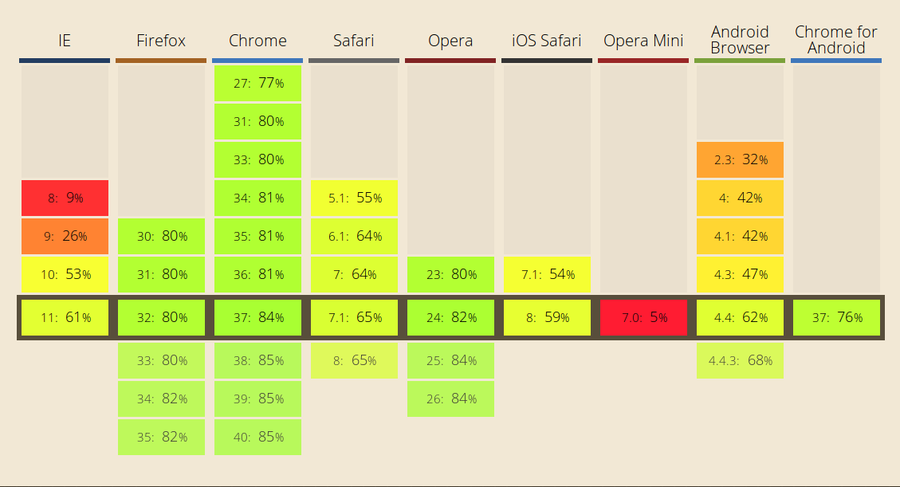

Web Development
Who wants to be a Software Engineer for the Web?
About Web Development
- in Theory
- in Practice
- in Person
About me
- Ben Peachey
- Making Websites and Web Applications since 1997
-
Senior Software DeveloperKick-ass Webdeveloper
@ The Bean Machine - Contributor of Issues, Fixer of typos, Member of Usergroups
Theory
- Specify
- Design
- Build
- Test
- Deploy

A Specialist you say?
That must pay well!
Less than you'd expect...

"The Stack"

- Learn it in school
- Learn it once then use it
- Learn it now, use it later
- Things are always changing
- Its hard to keep up
- There is always more you don't know
...and then?
- Specialize
- Move up the chain
- Step Aside
Practice makes perfect you better at what you do.
- Who here already programs?
- What languages?
- When did you start?
Everything works in theory
What could go wrong?
- Design by Comity
- Browsers
- Languages
- Your Code
- Other Peoples Code
Standards

Browsers
JS
CSS
HTML5
- Old Code = Old Mistakes
- New Code = New Mistakes
- New Code becomes Old Code
Work !== Work
AAAAAAAAAAaaaaaaaaaaaaaaaAAaaaRGH!
You are improving as well
- Critical Mass
- Solutions occur closer to the problem
- Libs, Frameworks, Tools, etc.
- Have the same problems
- No need to solve them yourself
- Use other peoples solutions
Being Creative
- Solve Problems
- Many Posibilities
- Find fun things to do
New Things to ...
- Build
- Invent
- Experience
So... What did I do this week?
Who would like a Nerf Gun?
Different Viewpoints
- Customers
- Co-Workers
- Managers
- Bosses
- Designers
- Sales/Marketing
- Testers
Socialise
So Many Tales To Tell
- Usergroups
- Rebecca Purple
- Team Work
- Conferences
- General Incompetence
@potherca

Sources:
- Slideshow made with reveal.js
- Question icon by Krisada from The Noun Project licensed under Creative Commons Attribution
- Adoption rate of web standards by Trevor Parscal (2011) - http://www.theoreticallogic.com/2011/08/adoption-rate-of-web-standards/
- Broswer History -> https://upload.wikimedia.org/wikipedia/commons/7/74/Timeline_of_web_browsers.svg
- Broswer History -> Timeline of web browsers by ADeveria and Spinal83 (?) - https://en.wikipedia.org/wiki/File:Timeline_of_web_browsers.svg
- Competing standards by XKCD (a.k.a. Randall Munroe) (2011) - http://xkcd.com/927/
- Dunning Kruger Effect by ArtAndTechnology.com.au (?) - http://www.artandtechnology.com.au/cartoons/index2.html
- Having fun -> The Simpsons in pure CSS by Chris Pattle (2013-2014) - http://pattle.github.io/simpsons-in-css/
- Having fun -> What the Color? by Lea Verou (2014) - http://leaverou.github.io/whathecolor/
- Learning the web - https://developer.mozilla.org/
- Learning the web - http://www.webplatform.org/
- Mobile Ready by Hangar17 ICT (2014) - http://www.hangar17.com/en/responsive-webdesign mobile-versus-desktop-usage
- Pioneers in computer science - https://en.wikipedia.org/wiki/List_of_pioneers_in_computer_science
- Project Triangle by Cosmocatalano (210) - https://en.wikipedia.org/wiki/Project_management_triangle#mediaviewer/File:Project-triangle.svg
- Recent Browser Versions - Broswer History Timeline by Eric Meyer and Kimberly Blessing (2007-2014)- http://meyerweb.com/eric/browsers/timeline-structured.html
- Salaris - http://www.loonwijzer.nl/home/salaris/salarischeck
- Software Engineering Model public domain - http://simple.wikipedia.org/wiki/Software_engineering
- The career pyramid -> Treading the PHPath by Rafael Dohms (2012) - http://www.slideshare.net/rdohms/treading-the-phpath
- The stack -> The Myth of the Full-stack Developer by By Andy Shora (2014) - http://andyshora.com/full-stack-developers.html
- Timelines - http://www.w3.org/2005/01/timelines/description
- Timelines - http://www.zakon.org/robert/internet/timeline/#Growth
- Timelines - http://www.zakon.org/robert/internet/timeline/ven
- Venn and the Art of Website Production by URBAN INFLUENCE DESIGN STUDIO (2010) - http://blog.urbaninfluence.com/archive/venn-and-art-website-production/
- W3C Standards -> Tech Stack by Steve Bratt (2006) - http://www.w3.org/2006/Talks/1023-sb-W3CTechSemWeb/
- Web Technologies -> Evolution of the Web by Hyperakt and Vizzuality (2010-2012) - http://www.evolutionoftheweb.com/
{kind=link}
{kind=link}
{kind=link}